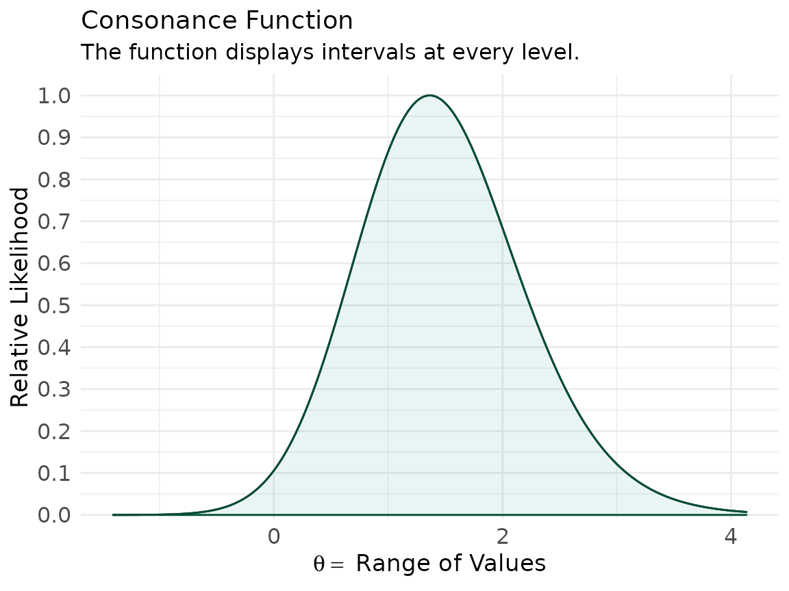
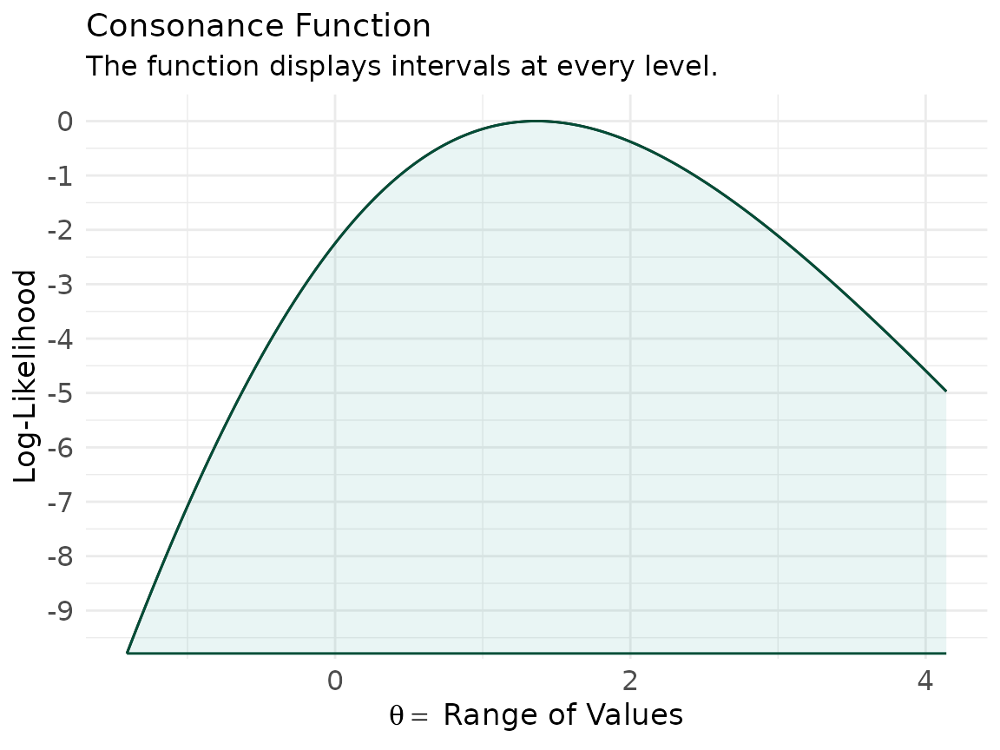
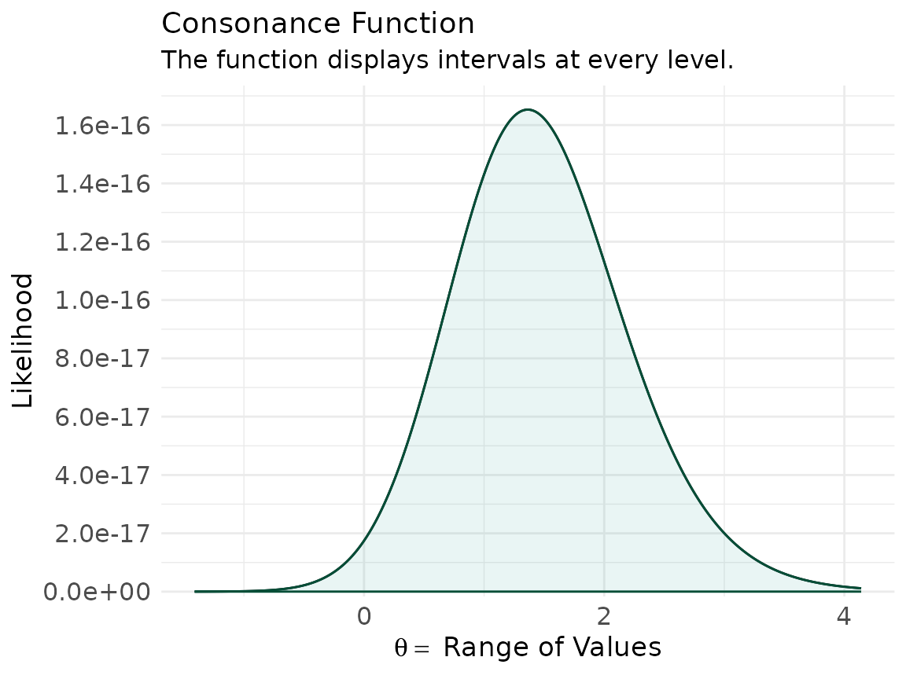
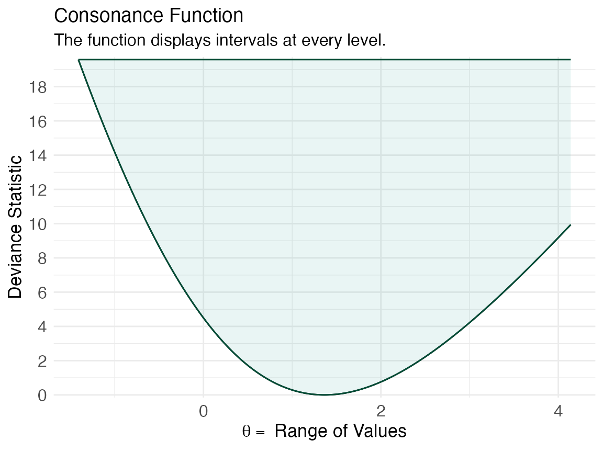

For this example, we’ll explore the curve_lik()
function, which can help generate profile likelihood functions, and
deviance functions with the help of the ProfileLikelihood
package.1.
For an introduction to what profile likelihoods are, see the following
paper.2
library(ProfileLikelihood)We’ll use a simple example taken directly from the ProfileLikelihood
documentation where we’ll calculate the likelihoods from a glm model
data(dataglm)
xx <- profilelike.glm(y ~ x1 + x2,
data = dataglm, profile.theta = "group",
family = binomial(link = "logit"), length = 500, round = 2
)
#> Warning message: provide lo.theta and hi.thetaThen, we’ll use curve_lik() on the object that the ProfileLikelihood
package produced.
lik <- curve_lik(xx, data = dataglm)Next, we’ll plot four functions, the relative likelihood, the log-likelihood, the likelihood, and the deviance function.
ggcurve(lik[[1]], type = "l1", nullvalue = TRUE)
ggcurve(lik[[1]], type = "l2")
ggcurve(lik[[1]], type = "l3")
ggcurve(lik[[1]], type = "d")
The obvious advantage of using reduced likelihoods is that they are free of nuisance parameters
thus, giving summaries of the data that can be incorporated into combined analyses.
Cite R Packages
Please remember to cite the packages that you use.
citation("concurve")
#> To cite package 'concurve' in publications use:
#>
#> Rafi Z, Vigotsky A (2026). _concurve: Computes and Plots
#> Compatibility (Confidence) Intervals, P-Values, S-Values, &
#> Likelihood Intervals to Form Consonance, Surprisal, & Likelihood
#> Functions_. R package version 3.0.0,
#> <https://CRAN.R-project.org/package=concurve>.
#>
#> Rafi Z, Greenland S (2020). "Semantic and Cognitive Tools to Aid
#> Statistical Science: Replace Confidence and Significance by
#> Compatibility and Surprise." _BMC Medical Research Methodology_,
#> *20*, 244. ISSN 1471-2288, doi:10.1186/s12874-020-01105-9
#> <https://doi.org/10.1186/s12874-020-01105-9>,
#> <https://doi.org/10.1186/s12874-020-01105-9>.
#>
#> To see these entries in BibTeX format, use 'print(<citation>,
#> bibtex=TRUE)', 'toBibtex(.)', or set
#> 'options(citation.bibtex.max=999)'.
citation("ProfileLikelihood")
#> To cite package 'ProfileLikelihood' in publications use:
#>
#> Choi L (2023). _ProfileLikelihood: Profile Likelihood for a Parameter
#> in Commonly Used Statistical Models_.
#> doi:10.32614/CRAN.package.ProfileLikelihood
#> <https://doi.org/10.32614/CRAN.package.ProfileLikelihood>, R package
#> version 1.3, <https://CRAN.R-project.org/package=ProfileLikelihood>.
#>
#> A BibTeX entry for LaTeX users is
#>
#> @Manual{,
#> title = {ProfileLikelihood: Profile Likelihood for a Parameter in Commonly Used Statistical
#> Models},
#> author = {Leena Choi},
#> year = {2023},
#> note = {R package version 1.3},
#> url = {https://CRAN.R-project.org/package=ProfileLikelihood},
#> doi = {10.32614/CRAN.package.ProfileLikelihood},
#> }